Each journey as played in the interactive workspace board, with the frame captured at its key moment. Captures come from Chromium runs of the same file the canvas publishes (fallback font in the test sandbox; Inter on the canvas).
Dashboard · docked panel
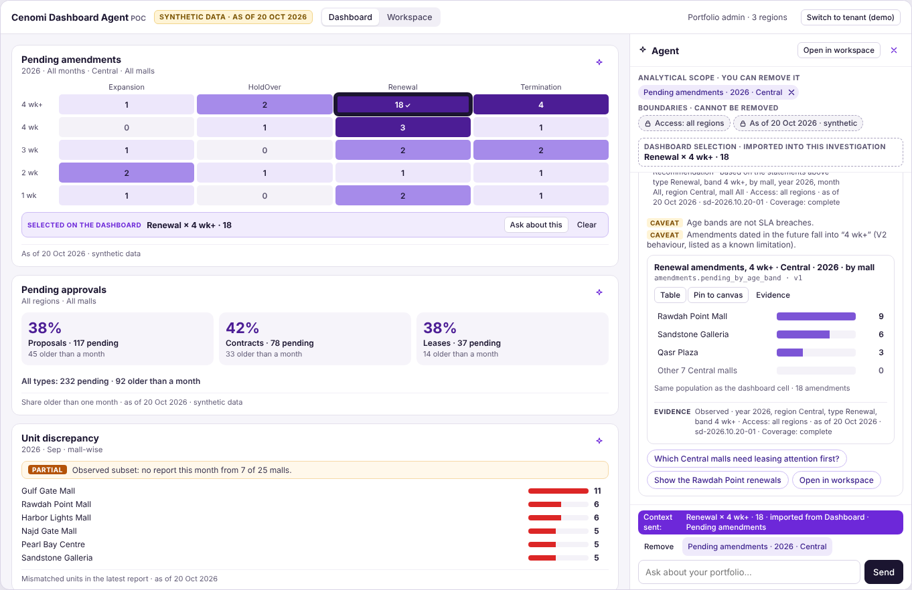
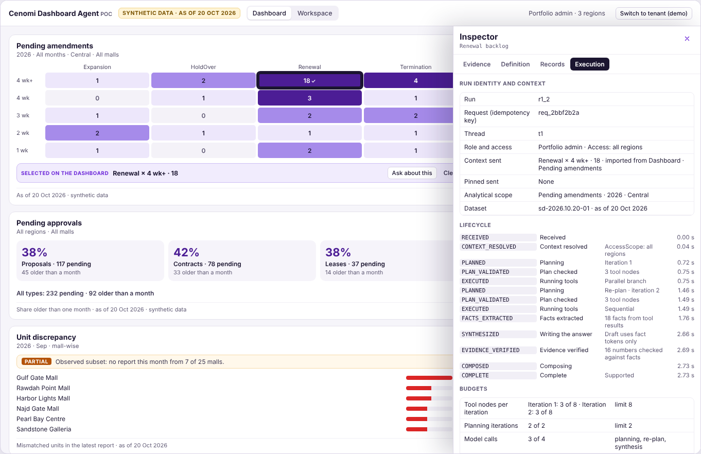
Expanded workspace
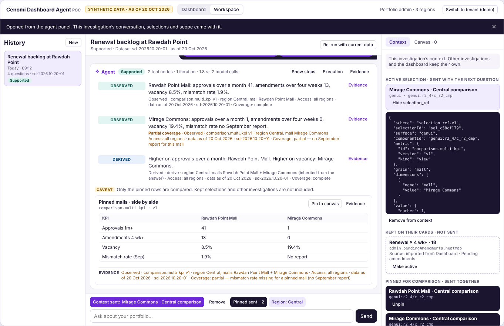
Workspace → dashboard
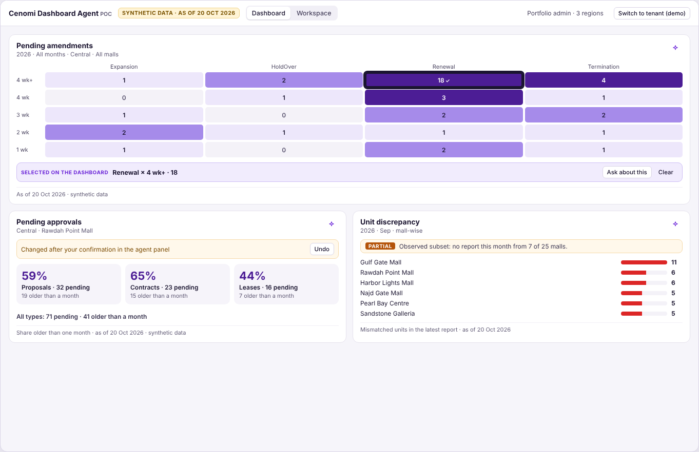
Workspace · new investigation
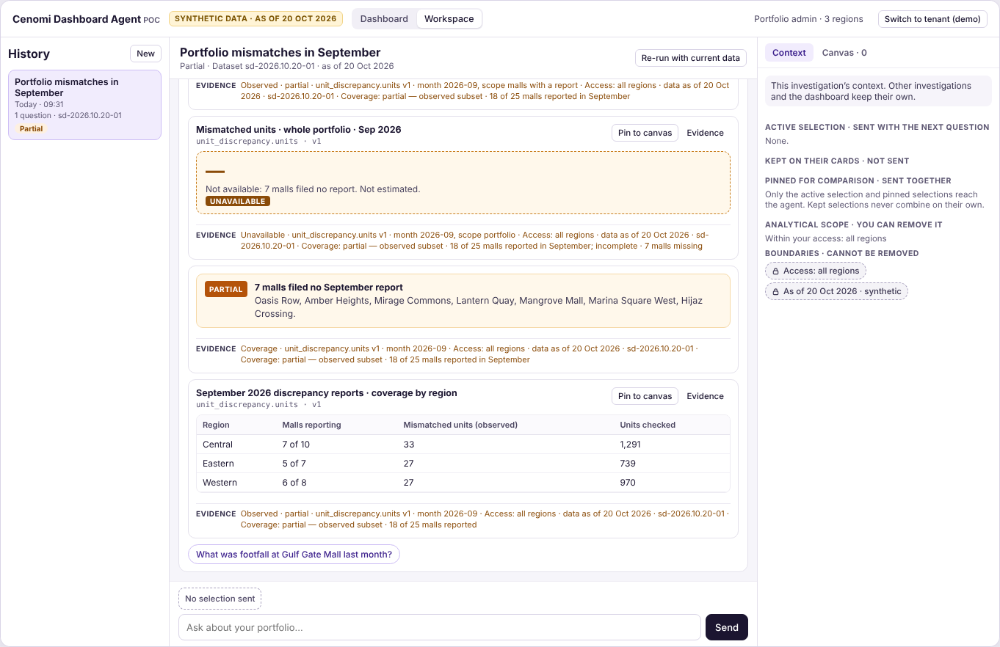
Workspace · new investigation
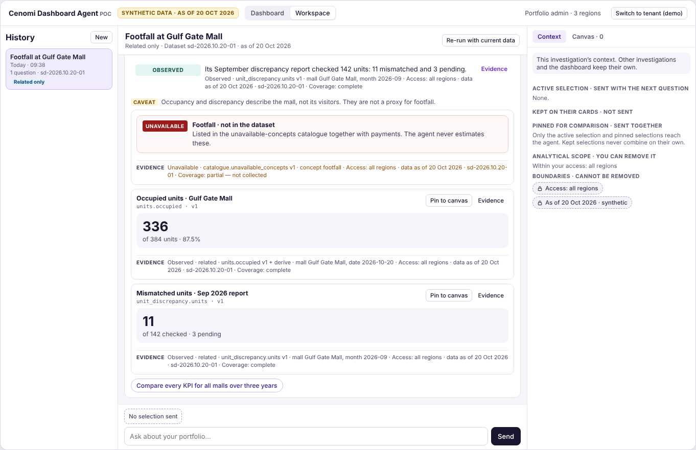
Workspace · new investigation
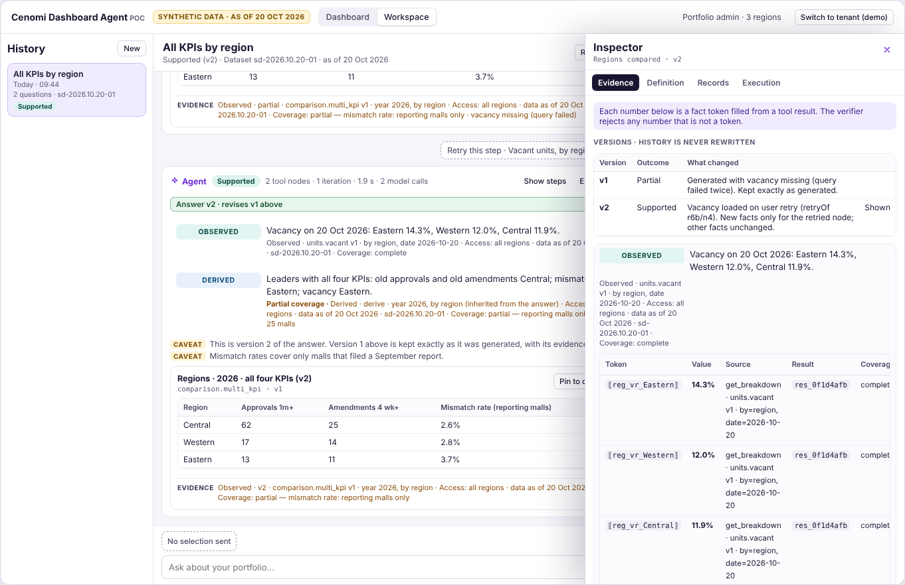
Workspace · history
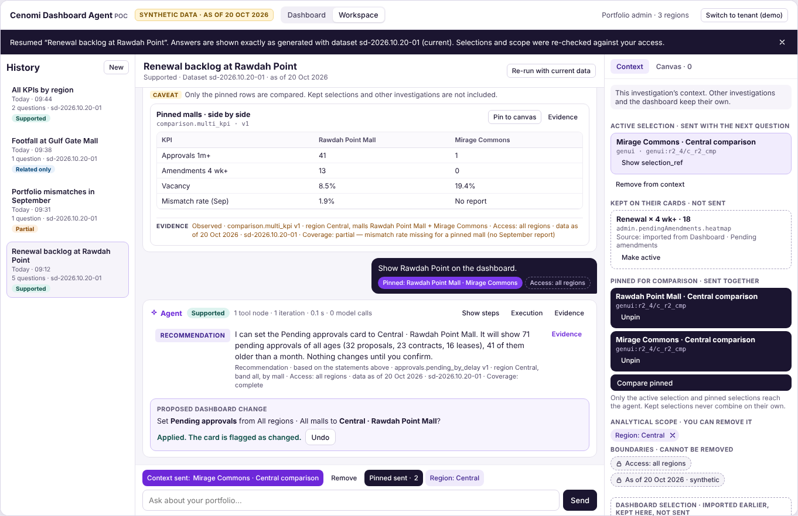
Tenant · docked panel
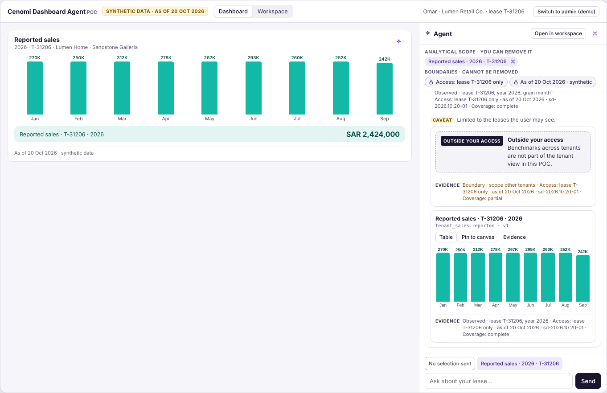
Workspace · new investigation
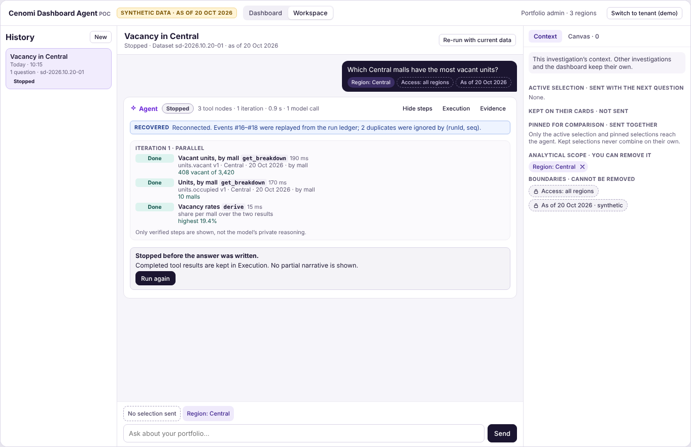
Workspace · threads, roles, scope
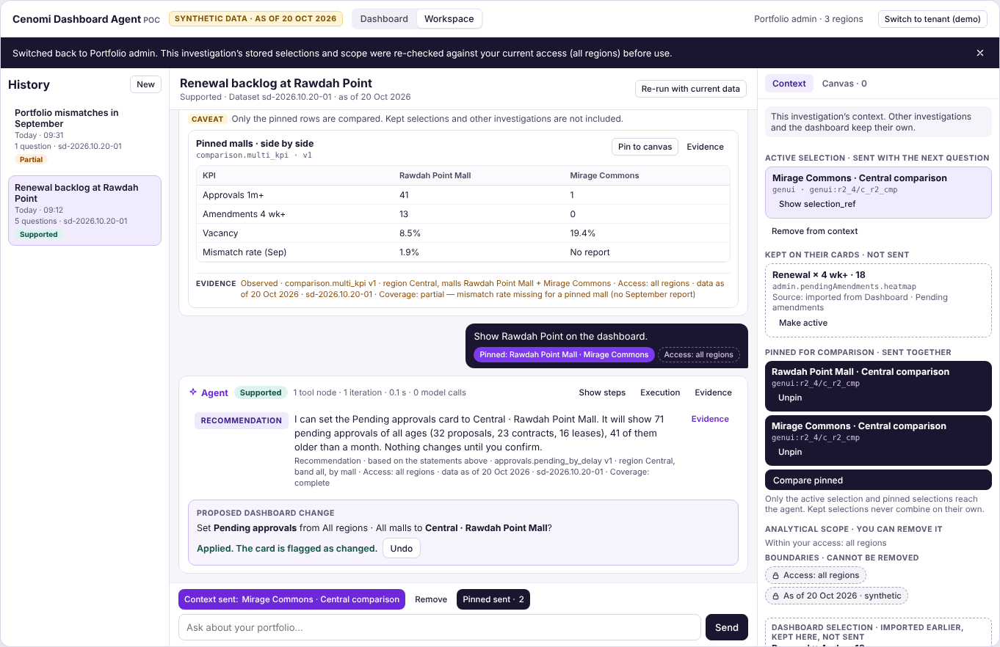
Same journeys at 1024 and 390 px
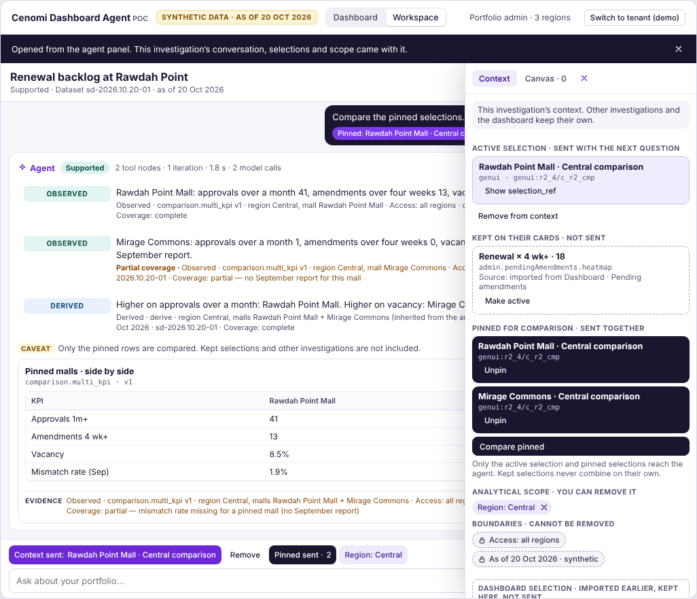
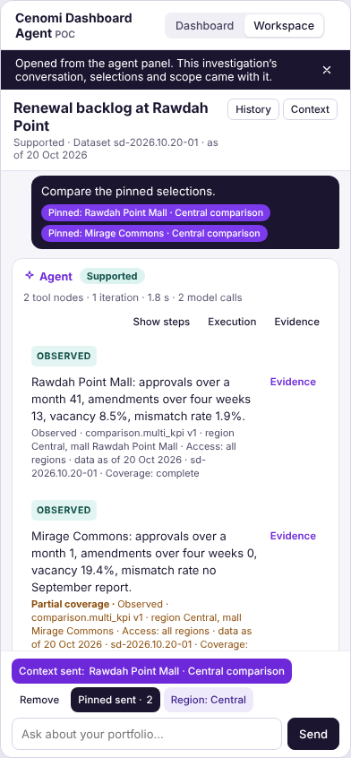